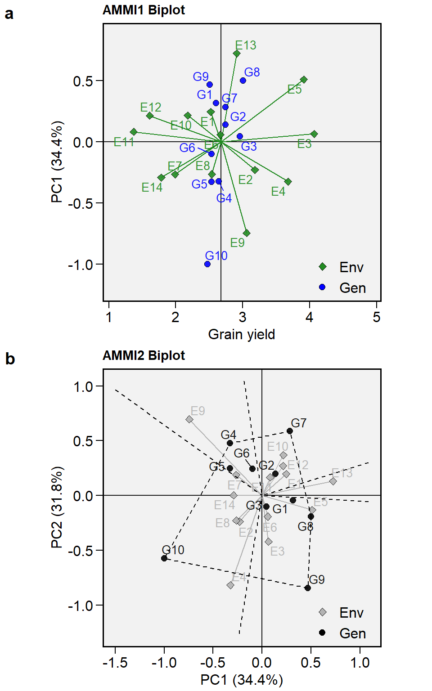
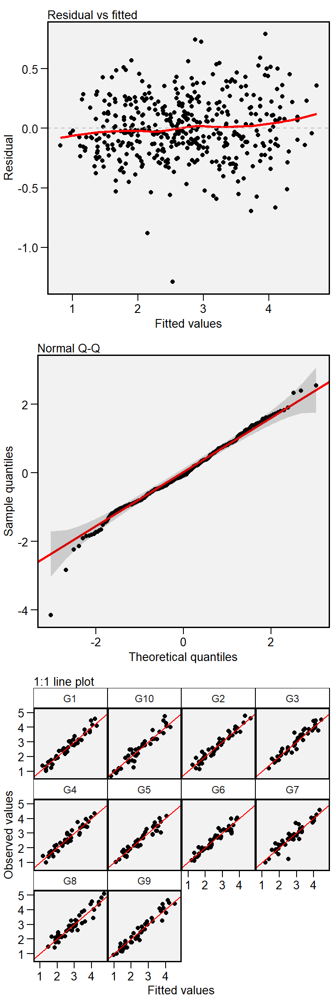
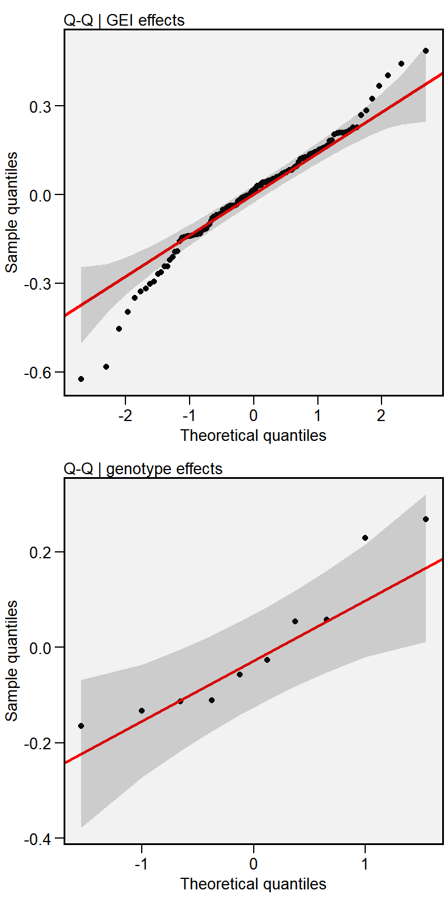
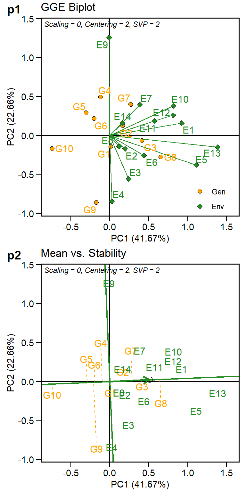

Multi-environment Trial Analysis
Tiago Olivoto
2019-12-16
Source:vignettes/vignettes_metan.Rmd
vignettes_metan.RmdBrief examples
Brief examples will be shown using the dataset data_ge that contains data on two variables assessed in 10 genotypes growing in 11 environments. For more details see ?data_ge.
library(metan)
library(kableExtra) # Used to make the tables
# Function to make HTML tables
print_table = function(table){
kable(table, "html", digits = 3) %>%
kable_styling(bootstrap_options = c("striped", "hover", "condensed", "responsive"), font_size = 12)
}
str(data_ge)Classes 'tbl_df', 'tbl' and 'data.frame': 420 obs. of 5 variables:
$ ENV: Factor w/ 14 levels "E1","E10","E11",..: 1 1 1 1 1 1 1 1 1 1 ...
$ GEN: Factor w/ 10 levels "G1","G10","G2",..: 1 1 1 3 3 3 4 4 4 5 ...
$ REP: Factor w/ 3 levels "1","2","3": 1 2 3 1 2 3 1 2 3 1 ...
$ GY : num 2.17 2.5 2.43 3.21 2.93 ...
$ HM : num 44.9 46.9 47.8 45.2 45.3 ...AMMI model
Fitting the model
The AMMI model may be fitted with with both functions performs_ammi() and waas(), which is the acronym for the weighted average of absolute scores (Olivoto, Lúcio, Da silva, Marchioro, et al. 2019).
Evaluating variable GY 0 %
Evaluating variable HM 100 %
All variables with significant (p < 0.05) genotype-vs-environment interaction
Done!Cross-validation procedures
The cross-validation procedures implemented in the are based on the splitting of the original data into a training set and a validation set. The model is fitted using the training set and the predicted value is compared with the validation set. This process is iterated many times, say, 1000 times. The lesser the difference between predicted and validation data, the higher the predictive accuracy of the model. More information may be found here.
Biplots
The well-known AMMI2 biplot may be obtained using the function plot_scores(). ggplot2-based graphics are obtained. Please, note that since performs_ammi() and , waas() functions allow analyzing multiple variables at the same time, e.g., resp = c(v1, v2, ...), the output ammi_model is a list that in this case has two elements, (GY and HM).
a <- plot_scores(ammi_model, axis.expand = 1.2)
b <- plot_scores(ammi_model,
type = 2,
polygon = TRUE,
col.gen = "black",
col.env = "gray70",
col.segm.env = "gray70",
axis.expand = 1.5)
arrange_ggplot(a, b, labels = letters[1:2], ncol = 1)
S3 method predict()
The S3 method predict() is implemented for objects of class performs_ammi and may be used to estimate the response of each genotype in each environment considering different number of Interaction Principal Component Axis (IPCA). As a example, to predict the variables GY and HM we will use four and six IPCA (number of significant IPCAs, respectively).
| ENV | GEN | Y | resOLS | Ypred | ResAMMI | YpredAMMI | AMMI0 |
|---|---|---|---|---|---|---|---|
| E1 | G1 | 2.366 | -0.084 | 2.450 | 0.07115484 | 2.521273 | 2.450 |
| E1 | G10 | 1.974 | -0.344 | 2.318 | -0.35391141 | 1.963751 | 2.318 |
| E1 | G2 | 2.902 | 0.311 | 2.591 | 0.29035016 | 2.880939 | 2.591 |
| E1 | G3 | 2.889 | 0.087 | 2.802 | -0.04518795 | 2.756598 | 2.802 |
| E1 | G4 | 2.589 | 0.100 | 2.488 | 0.04942370 | 2.537781 | 2.488 |
| E1 | G5 | 2.188 | -0.196 | 2.384 | -0.07091881 | 2.312867 | 2.384 |
BLUP model
The implementation of linear-mixed effect models to predict the response variable in MET is made with waasb() function. The mixed-effect version of the already fitted AMMI model, where genotype and genotype-vs-environment interaction are assumed to have random effects is then obtained as follows.
All variables with significant (p < 0.05) genotype-vs-environment interaction
Done!The mixed-effect model fitted in model2 has many outputs. For example, we can easily obtain the Likelihood Ration Test for random effects, the variance components, and the BLUPs for genotypes as follows:
Residual plots
Several residual plots may be obtained applying the S3 generic function plot() to an object of class waasb (or waas).

Distribution of random effects
The distribution of the random effects may be obtained using the argument type = "re".

| model | npar | logLik | AIC | LRT | Df | Pr(>Chisq) |
|---|---|---|---|---|---|---|
| Complete | 45 | -214.717 | 519.435 | NA | NA | NA |
| Genotype | 44 | -224.375 | 536.750 | 19.315 | 1 | 0 |
| Gen:Env | 44 | -237.133 | 562.266 | 44.832 | 1 | 0 |
| Group | Variance |
|---|---|
| GEN | 0.028 |
| GEN:ENV | 0.057 |
| Residual | 0.097 |
| Parameters | Values |
|---|---|
| GEI variance | 0.057 |
| GEI (%) | 31.259 |
| Genotypic variance | 0.028 |
| Gen (%) | 15.447 |
| Residual variance | 0.097 |
| Res (%) | 53.294 |
| Phenotypic variance | 0.181 |
| Heritability | 0.154 |
| GEIr2 | 0.313 |
| Heribatility of means | 0.815 |
| Accuracy | 0.903 |
| rge | 0.370 |
| CVg | 6.260 |
| CVr | 11.628 |
| CV ratio | 0.538 |
| Rank | GEN | BLUPg | Predicted | LL | UL |
|---|---|---|---|---|---|
| 1 | G8 | 0.269 | 2.943 | 2.839 | 3.046 |
| 2 | G3 | 0.229 | 2.903 | 2.800 | 3.007 |
| 3 | G2 | 0.057 | 2.731 | 2.628 | 2.835 |
| 4 | G7 | 0.054 | 2.729 | 2.625 | 2.832 |
| 5 | G4 | -0.026 | 2.648 | 2.544 | 2.751 |
| 6 | G1 | -0.058 | 2.617 | 2.513 | 2.720 |
| 7 | G5 | -0.112 | 2.563 | 2.459 | 2.666 |
| 8 | G6 | -0.114 | 2.560 | 2.456 | 2.663 |
| 9 | G9 | -0.134 | 2.541 | 2.437 | 2.644 |
| 10 | G10 | -0.166 | 2.509 | 2.405 | 2.612 |
An easy way to check the results in the R console is by using the function print()
Plotting the BLUPs for genotypes
library(ggplot2)
c <- plot_blup(model2)
d <- plot_blup(model2,
prob = 0.1,
col.shape = c("gray20", "gray80")) +
coord_flip()
arrange_ggplot(c, d,labels = letters[3:4], ncol = 1)
BLUPS for genotype-vs-environment interaction
| ENV | GEN | BLUPge | BLUPg | BLUPg+ge | Predicted | LL | UL |
|---|---|---|---|---|---|---|---|
| E1 | G1 | -0.062 | -0.058 | -0.120 | 2.401 | 2.298 | 2.505 |
| E1 | G10 | -0.243 | -0.166 | -0.409 | 2.112 | 2.009 | 2.216 |
| E1 | G2 | 0.207 | 0.057 | 0.264 | 2.784 | 2.681 | 2.888 |
| E1 | G3 | 0.088 | 0.229 | 0.318 | 2.838 | 2.735 | 2.942 |
| E1 | G4 | 0.060 | -0.026 | 0.034 | 2.554 | 2.451 | 2.658 |
| E1 | G5 | -0.141 | -0.112 | -0.252 | 2.268 | 2.165 | 2.372 |
BLUP-based stability index
The WAASB index (Olivoto, Lúcio, Da silva, Marchioro, et al. 2019) is a quantitative stability measure based on the weighted average of the absolute scores from the singular value decomposition of the BLUPs for genotype-vs-interaction effects and was already computed when we fitted the model with waas(). This statistic may be shown with get_model_data().
| gen | GY |
|---|---|
| G1 | 0.134 |
| G10 | 0.465 |
| G2 | 0.214 |
| G3 | 0.099 |
| G4 | 0.248 |
| G5 | 0.218 |
| G6 | 0.172 |
| G7 | 0.319 |
| G8 | 0.265 |
| G9 | 0.372 |
The function Resende_indexes() may be used to compute the harmonic mean of genotypic values (HMGV), the relative performance of the genotypic values (RPGV) and the harmonic mean of the relative performance of genotypic values (HMRPGV). See Alves et al. (2018) for more details.
| GEN | Y | HMGV | HMGV_R | RPGV | RPGV_Y | RPGV_R | HMRPGV | HMRPGV_Y | HMRPGV_R |
|---|---|---|---|---|---|---|---|---|---|
| G1 | 2.604 | 2.316 | 6 | 0.969 | 2.591 | 6 | 0.967 | 2.585 | 6 |
| G10 | 2.471 | 2.112 | 10 | 0.913 | 2.442 | 10 | 0.896 | 2.397 | 10 |
| G2 | 2.744 | 2.466 | 4 | 1.025 | 2.742 | 4 | 1.020 | 2.727 | 4 |
| G3 | 2.955 | 2.681 | 2 | 1.105 | 2.955 | 2 | 1.104 | 2.952 | 2 |
| G4 | 2.642 | 2.388 | 5 | 0.990 | 2.649 | 5 | 0.988 | 2.643 | 5 |
| G5 | 2.537 | 2.302 | 8 | 0.954 | 2.552 | 7 | 0.952 | 2.546 | 8 |
| G6 | 2.534 | 2.304 | 7 | 0.954 | 2.552 | 8 | 0.952 | 2.546 | 7 |
| G7 | 2.741 | 2.520 | 3 | 1.037 | 2.773 | 3 | 1.031 | 2.757 | 3 |
| G8 | 3.004 | 2.740 | 1 | 1.126 | 3.011 | 1 | 1.122 | 3.001 | 1 |
| G9 | 2.510 | 2.177 | 9 | 0.926 | 2.477 | 9 | 0.917 | 2.453 | 9 |
GGE model
Fitting the model
The GGE model is fitted with the function gge(). This function produces a GGE model based on both a two-way table (in our case the object table) with genotypes in the rows and environments in columns, or a data.frame containing at least the columns for genotypes, environments and the response variable(s).
Visualizing the Biplot
The generic function plot() is used to generate a biplot using as input a fitted model of class gge. The type of biplot is chosen by the argument type in the function. Ten biplots type are available according to {Yan and Kang (2003)}.
-
type = 1A basic biplot. -
type = 2Mean performance vs. stability. -
type = 3Which-won-where. -
type = 4Discriminativeness vs. representativeness. -
type = 5Examine an environment. -
type = 6Ranking environments. -
type = 7Examine a genotype. -
type = 8Ranking gentoypes. -
type = 9Compare two genotypes. -
type = 10Relationship among environments.
e <- plot(gge_model)
f <- plot(gge_model, type = 2)
arrange_ggplot(e, f, labels = letters[5:6], ncol = 1)
Parametric and non-parametric statistics
The metan package provides an easy way to compute several world-known stability methods. Up to the version 0.2.0, the following stability methods are implemented:
- Joint regression analysis (Eberhart and Russell 1966), using the function
ge_reg() - Genotypic confidence index (Annicchiarico 1992), using the function
Annicchiarico() - Nonparametric superiority index (Lin and Binns 1988), using the function
superiority() - Ecovalence (Wricke 1965), using the function
ecovalence() - Stability analysis and environmental stratification (Murakami and Cruz 2004), using the function
ge_factanal()
The easiest way to compute the above-mentioned stability indexes is by using the function ge_stats(). This function basically returns a summary of each method. If you are looking for more details from each method like plot() and print(), I suggest computing that methods using their own function.
Computing the indexes
# A tibble: 10 x 32
var gen Y Var Shukla Wi_g Wi_f Wi_u Ecoval bij Sij R2
<chr> <chr> <dbl> <dbl> <dbl> <dbl> <dbl> <dbl> <dbl> <dbl> <dbl> <dbl>
1 GY G1 2.60 10.9 0.0280 84.4 89.2 81.1 1.22 1.06 -0.00142 0.966
2 GY G10 2.47 14.2 0.244 59.2 64.6 54.4 7.96 1.12 0.177 0.823
3 GY G2 2.74 11.3 0.0861 82.8 95.3 75.6 3.03 1.05 0.0497 0.913
4 GY G3 2.96 10.1 0.0121 104. 99.7 107. 0.725 1.03 -0.0128 0.977
5 GY G4 2.64 8.93 0.0640 85.9 79.5 91.9 2.34 0.937 0.0298 0.917
6 GY G5 2.54 7.82 0.0480 82.7 82.2 82.4 1.84 0.887 0.00902 0.937
7 GY G6 2.53 7.34 0.0468 83.0 83.7 81.8 1.81 0.861 0.00304 0.942
8 GY G7 2.74 7.33 0.122 83.9 77.6 93.4 4.16 0.819 0.0579 0.852
9 GY G8 3.00 10.8 0.0712 98.8 90.5 107. 2.57 1.03 0.0382 0.922
10 GY G9 2.51 14.7 0.167 68.8 68.9 70.3 5.56 1.19 0.0938 0.897
# ... with 20 more variables: ASV <dbl>, SIPC <dbl>, EV <dbl>, ZA <dbl>,
# WAAS <dbl>, HMGV <dbl>, RPGV <dbl>, HMRPGV <dbl>, Pi_a <dbl>, Pi_f <dbl>,
# Pi_u <dbl>, Gai <dbl>, S1 <dbl>, S2 <dbl>, S3 <dbl>, S6 <dbl>, N1 <dbl>,
# N2 <dbl>, N3 <dbl>, N4 <dbl>Selection based on multiple traits
The multi-trait stability index (MTSI) was proposed by Olivoto, Lúcio, Da silva, Sari, et al. (2019) and is used for simultaneous selection considering mean performance and stability (of several traits) in the analysis of METs using both fixed and mixed-effect models. Note that a model may be fitted easier and faster using the forward-pipe %>% and assigning the arguments in the correct order (environment, genotype, replication and response(s) variable(s). Using %>% make it the coding logical and clean especially when the output of a function is used as input in a second function.
References
Alves, Rodrigo Silva, Leonardo de Azevedo Peixoto, Paulo Eduardo Teodoro, Lidiane Aparecida Silva, Erina Vitório Rodrigues, Marcos Deon Vilela de Resende, Bruno Galveas Laviola, and Leonardo Lopes Bhering. 2018. “Selection of Jatropha curcas families based on temporal stability and adaptability of genetic values.” Industrial Crops and Products 119 (September): 290–93. https://doi.org/10.1016/J.INDCROP.2018.04.029.
Annicchiarico, P. 1992. “Cultivar adaptation and recommendation from alfalfa trials in Northern Italy.” Journal of Genetics and Breeding 46: 269–78.
Eberhart, S. A., and W. A. Russell. 1966. “Stability parameters for comparing Varieties.” Crop Science 6 (1): 36–40. https://doi.org/10.2135/cropsci1966.0011183X000600010011x.
Lin, C. S., and M. R. Binns. 1988. “A superiority measure of cultivar performance for cultivar x location data.” Canadian Journal of Plant Science 68 (1): 193–98. https://doi.org/10.4141/cjps88-018.
Murakami, D. M., and C. D. Cruz. 2004. “Proposal of methodologies for environment stratification and analysis of genotype adaptability.” Crop Breeding and Applied Biotechnology 4 (1): 7–11. http://www.sbmp.org.br/cbab/siscbab/uploads/c8128f42-aefe-cdf5.pdf.
Olivoto, T., A. D. C Lúcio, J. A. G. Da silva, V. S. Marchioro, V. Q. de Souza, and E. Jost. 2019. “Mean performance and stability in multi-environment trials I: Combining features of AMMI and BLUP techniques.” Agronomy Journal.
Olivoto, T., A. D. C Lúcio, J. A. G. Da silva, B. G. Sari, and M. I. Diel. 2019. “Mean performance and stability in multi-environment trials II: Selection based on multiple traits.” Agronomy Journal.
Wricke, G. 1965. “Zur berechnung der okovalenz bei sommerweizen und hafer.” Z. Pflanzenzuchtg 52: 127–38.
Yan, Weikai., and Manjit S. Kang. 2003. GGE biplot analysis : a graphical tool for breeders, geneticists, and agronomists. CRC Press.